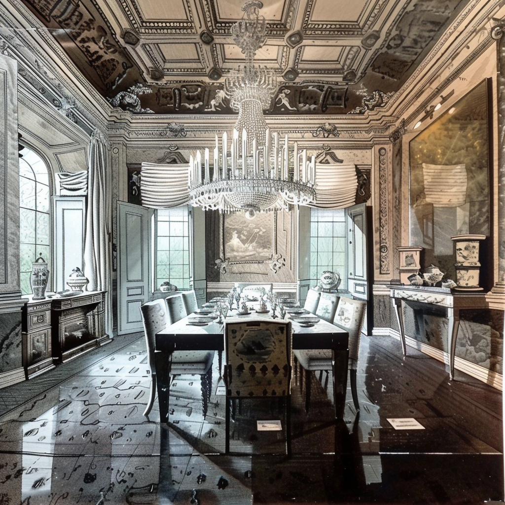
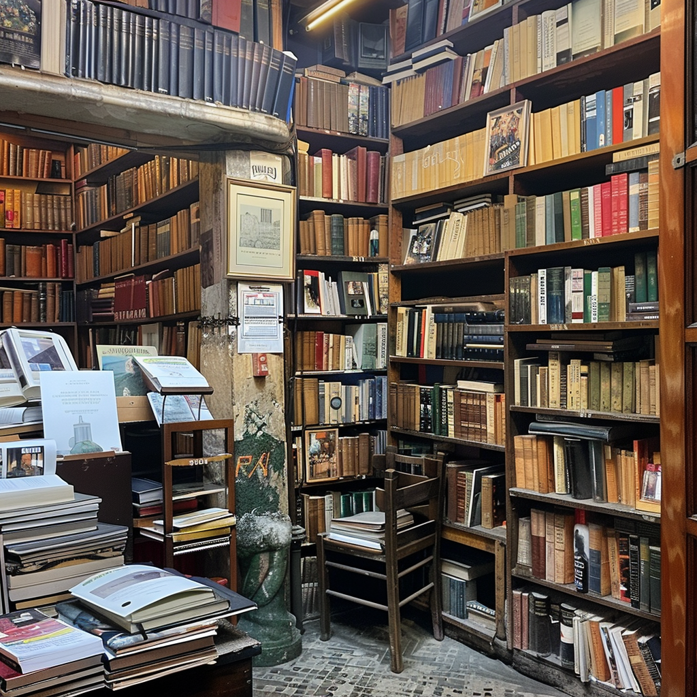

The Maison De Fortune
Located on the edge of London's Regents Park, a grand townhouse but around built around 1823 serves as the base of the collective.
Visions and Jewels
this is an antique market


The Miscellany Bookstore
Located in a sidestreet
The Spiritual Cloud
Nadia, Colette, along with other people, animals, and spiritual entities access the spiritual cloud through various methods to examine historical records and explore future probabilities. The mechanism they use is to first locate a single image, that acts as a gateway into a conscious stream, a hyper-realistic mental movie but at others completely abstract vision.
Others get sent information from the cloud, more often than not in their dreams or via meditations.